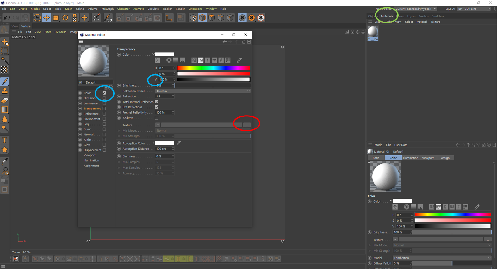

모델링 후, uv 언랩과 맵핑에 관하여.
(3D 오브젝트에 손맵 만들기)
텍스쳐를 그리기 쉽게 분류하여 detach로 적절하게 오브젝트들을 분리한다.
만약 Symmetry효과를 적용하기를 원한다면, 미리 오브젝트 반은 없애주고 symmetry는 모든 작업이 끝난후 적용해주도록 하자.
1. UV언랩과 OBJ 추출
Editable poly상태에서 Unwrap UVW를 씌우고, Open UV Editor를 열어 Mapping - Normal Mapping - Back/Front Mapping으로 바꿔주고 전개도를 적절히 배치한다.
조정이 다 끝났으면 Tools - Renderer UVW Template 높이와 넓이를 조정해주고 (기본값 1024) Render UV Template를 눌러 텍스쳐를 targa 혹은 psd파일로 저장한다. 그리고 Editable poly와 Unwrap UVW Collapse를 꼭 해준다.
그리고 File - Export - Export Selected로 선택한 오브젝트를 추출한다. Export Option 에서 Faces를 Triangles로 바꿔준다. (면을 삼각형으로 추출하는 것이 더 좋다)
설정이 끝나면 Export로 OBJ를 추출해준다.
2. 맵핑
Cinema4d의 BodyPaint 기능을 사용한다. (포토샵을 사용해도 상관없다)
오른쪽위의 Layout을 BP - 3D Paint로 바꿔준다.
File - Open Project로 추출한 OBJ파일을 불러온다. Import옵션을 확인하고 (아마 맥스의 경우 Flip Z Axis로 체크되어있을 것) 오브젝트를 불러오고 나면 Project Settings에서 Linear Workflow를 체크 해제해준다. (본래 색을 보기 위함)
*Project Settings는 Mode부분에서 볼 수 있다.

그 후, Materials에서 머티리얼을 더블 클릭하여 에디터를 열어준다. V값을 100으로 만들어주고, 왼쪽의 체크박스는 Color빼고 모두 체크를 지워준다.
그리고 Texture의 붉은 동그라미 부분에서 아까 맥스에서 추출한 이미지 텍스쳐 파일을 불러온다. 그럼 이제 Layers창에 Background와 Alpha 레이어가 보일 것이다.
(지금도 보이지 않는다면 왼쪽 상단 view옆의 Texture창에 들어가 File - Open Texture에서 직접 텍스쳐를 불러와준다)
이제 맵핑 작업을 하면 된다. (View창의 추천 세팅은 Camera는 Parallel, Display는 Constant Shading N ~ E이다)
작업을 끝마치고 나면 file - save project as 혹은, Texture창의 file - save Texture as에서 PSD파일로 저장해준다.
+ 개인의견) 와콤으로 바디페인트에서 텍스쳐 작업을 하는것 보다는, 바디페인트에서 텍스쳐에 대략적인 위치와 밑그림만 잡아주고 본 작업은 패드나 타 페인팅 프로그램에서 진행하는게 더 편했음
3. 머티리얼 적용
맥스에서 Slate Material Editor를 연다. Standard를 불러오고, Diffuse Color에서 선을 뽑아 General - Bitmap에서 아까 C4d에서 추출한 PSD파일을 불러온다. 그리고 머티리얼 타이틀을 우클릭하여 Show Shaded Material in Viewport 체크가 되어있는지 확인한다.
이 머티리얼을 오른쪽의 원에서 뽑아 알맞은 오브젝트에 연결해주면 적용까지 성공.
(모델링 중간과정)

이후 리깅과 유니티 맵핑 + 휴머노이드 세팅